Kappale 4 2022 (Cupidus)
Taas laitettu tähän vain ne, joita ei ole aikaisemmissa tenteissä. Jos kysymystä on avattu heikosti wikissä, niin olen yrittänyt kirjoittaa tähän aiheesta tärkeimmät asiat tai keksiä mahdollisen kysymyksenasettelun.
4.1 Reisiluun distaaliset murtumat
Ei kysymystä wikissä, vain aihe mainittu. Tässä muutamia korkean annin faktoideja:
Reisiluun alaosan murtumat syntyvät yleensä voimakkaan vammaenergian seurauksena. Vamman esiintymishuippuja on kaksi. Kasvuikäisillä ja nuorilla aikuisilla näitä vammoja todetaan putoamis-, urheilu- ja liikennetapaturmien yhteydessä, jolloin murtumalinja kulkee yleensä kasvulinjojen kautta. Toisaalta vanhuksille murtumia syntyy myös pienen vammaenergian aiheuttamana.
Ovat joko nivelen ulkopuolisia (suprakondylaarisia) tai niveleen ulottuvia murtumia. Murtuma voi olla myös puhtaasti nivelensisäinen (kondyylimurtuma).
Murtumakappaleet ovat usein dislokoituneet alueen lihasvoimien seurauksena. Raajassa todetaan yleensä lievä deformiteetti, taipuma (recurvatum), siirtymä (ad latus) ja lyhentymä.
Hoito on leikkauksellinen. Leikkaushoito on suunniteltava huolellisesti murtuman morfologian mukaisesti (TT auttaa ja tehdään ainakin nivelensisäisissä murtumissa). Tromboosiprofylaksia on yleensä aiheellinen.
Leikkauksen jälkeen polvi mobilisoidaan. Kipsihoito ei yleensä ole tarpeen. Potilas jalkautetaan mahdollisimman nopeasti sauvojen tai kävelytuen kanssa. Varausrajoitus on tarpeen yleensä 6‒10 viikon ajan. Varausrajoitukset määritetään potilaskohtaisesti luurakenteen ja vamman laadun sekä potilaan toimintakyvyn perusteella. Täysi varaus aloitetaan vasta murtuman luutumisen edistyttyä riittävästi.
4.2 Käden vammat ja vakuutuskorvaukset – koska voit hakea?
Valitse yksi
- Heti
- Murtuman luuduttua
- 1v kuluttua
- 2v kuluttua
Solution.
cVahingon kärsineelle korvataan tapaturmasta aiheutunut pysyvä vika ja haitta haittarahalla, joka on riippumaton työansioiden tai elatuksen menetyksestä. Korvaus määräytyy vamman haittaluokan (1–20) perusteella.
Käden vammoissa lopullinen hoitotulos on arvioitavissa keskimäärin noin vuoden kuluttua vammautumisesta tai viimeisestä toimenpiteestä. Hermovammoissa aika on noin kaksi vuotta.
4.3 Polvilumpion sijoiltaanmenon leikkausindikaatiot
Ei ole vaihtoehtoja wikissä. Tässä leikkausindikaatiot (lyhyesti indikaatiot = murtumat tai toistuva luksaatiotaipumus):
Murtuma luksaation yhteydessä. Nivelpinnasta irronnut luurustokappale kiinnitetään paikoilleen liukenevilla sauvoilla tai pienillä ruuveilla. Mikäli luksaatioon liittyy laaja mediaalipuolen pehmytkudosvamma eikä lumpio pysy paikoillaan, voi varhaisvaiheen MPFL-rekonstruktio olla aiheellinen.
Toistuva luksaatiotaipumus intensiivisestä kuntoutuksesta huolimatta. Operatiivinen hoito keskittyy pääasiassa MPFL-rekonstruktioon ja rakenteellisten poikkeavuuksien korjaukseen. MPFL-rekonstruktioleikkaus tehdään useimmiten käyttäen hamstring-jännesiirrettä (gracilis- tai semitendinosus-jänne). Arviolta 50 % konservatiivisesti hoidetuista primaariluksaatioista päädytään myöhemmin hoitamaan kirurgisesti.
Luksaatiolle altistavat anatomiset tekijät arvioidaan ja korjataan tarvittaessa kirurgisesti. Alaraajan merkittävä valgussuuntainen akselivirhe korjataan femurin suprakondylaarisella varisoivalla osteotomialla. Patella altaa hoidetaan tibian tuberositaksen distalisaatiolla. Femurin troklean dysplasia voidaan korjata trokleoplastialla, jossa troklean uraa syvennetään. Femurin korostuneeseen anteversioon käytetään femurin derotaatio-osteotomiaa.
4.4 Fibulan murtuman hoitolinja
Ei ole vaihtoehtoja wikissä. Tässä hoitolinjoista tärkeimmät asiat:
Pohjeluun murtuma ilman muita liitännäisvammoja on harvinainen, suoran iskun aiheuttama vamma. Yksittäisen pohjeluun vamman hoito on konservatiivinen (kipulääkitys+elastinen sidos jalkaterästä polven tasolle 2‒3 viikon ajaksi + mahdollisesti laskimotukoksen ehkäisy), eikä raajan varausta tarvitse rajoittaa.
Useimmiten kuitenkin tapahtuu nilkan, sääriluun tai polven alueen merkittävän vamman yhteydessä. Polven ligamenttivammoihin liittyvän pohjeluun yläosan murtuman hoito määräytyy polvivamman hoidon vaatimusten mukaisesti. Nilkkavammoihin liittyvän pohjeluun alaosan murtuman hoito voi olla konservatiivinen tai leikkauksellinen. Hoitolinja määräytyy nilkkavamman kokonaisuuden perusteella. Nilkkavammoihin liittyvät pohjeluun keski- ja yläkolmanneksen alueen murtumat eivät yleensä edellytä kiinnitystä.
Pohjeluun murtuma ilman liitännäisvammoja paranee useimmiten ongelmitta. Luutumisennuste on hyvä. Vammaa edeltänyt toimintataso saavutetaan murtuman luuduttua, noin 2-4 kuukauden kuluessa.
4.5 Skafolunaarisen ligamentin repeämä – tunnista ja hoito
Skafolunaariligamentin vaurio on yleisin ranteen ligamenttivaurio. Vamma syntyy yleisimmin kaaduttaessa ja potilaan ottaessa vastaan ojennetulla kädellä. Ligamenttivamma voi olla itsenäinen tai liittyä esimerkiksi radius- tai skafoideummurtumaan.
Röntgenissä näkyy SL-välin leveäminen (tyypillisesti alle 2mm)
Epäiltäessä skafolunaarista vauriota potilaan lähettämisessä käsikirurgiseen arvioon ei ole syytä viivytellä, sillä nivelsidekorjaus voidaan yleensä tehdä akuutissa vaiheessa 4‒6 viikon sisällä vammasta. Hoitamattomana SL-välin avautuminen voi jatkua ja johtaa etenevään artroosiin (SLAC = scaphoid lunate advanced collapse), jonka hoitona on ranteen osittainen tai täydellinen luudutus.
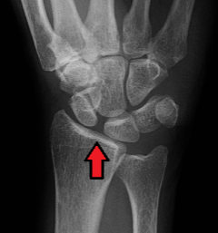
4.6 Missä sijaitsee Bennettin murtuma?
Ei vaihtoehtoja wikissä, mutta tulisi tietää ilman vaihtoehtojakin.
Solution.
MC I:n tyven intra-artikulaarinen murtumaLuun tyven ulnaarinen kulma on murtunut suurena tai pienenä kappaleena irti luusta, mutta pysyy ligamenttien ansiosta paikallaan dislokoitumatta. Suurempi fragmentti eli MC I -luu sen sijaan dislokoituu abductor pollicis longuksen vetämänä.
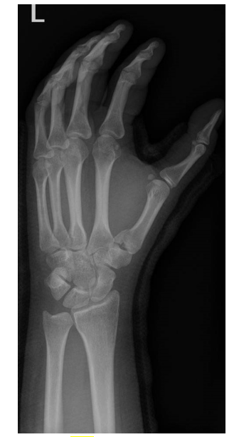4.7 Mitä kautta lantion murtumat leikataan?
Ei vaihtoehtoja wikissä.
Solution.
Tyypillisimmin etu- tai takakautta levytyksetInstabiilien lantiorenkaan murtumien lopullinen leikkauksellinen hoito voidaan toteuttaa, kun potilaan tila on stabiloitunut. Useimmiten on perusteltua odottaa vähintään 1-2 vuorokautta ennen lopullista leikkaushoidon toteutusta, koska silloin leikkaukseen liittyvä, murtumasta tuleva vuoto on selvästi vähäisempää kuin alkuvaiheessa leikattaessa.
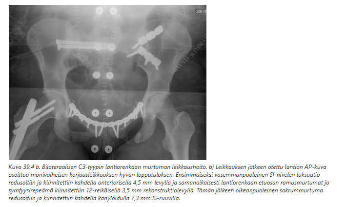 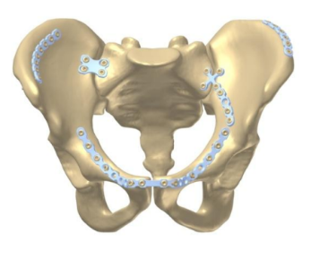4.8 Miten tutkit supraspinatuksen (jänteen) repeämää?
Ei vaihtoehtoja wikissä.
Solution.
Kliininen tutkimus ja kuvantaminen (aluksi rtg)Kliiniset tutkimukset ovat Joben (Empty can) testi ja/tai drop arm -testi. Joben testissä potilas tuo yläraajat 90 asteen loitonnukseen ja siitä noin 30 astetta eteenpäin niin, että raajat ovat lapaluun suuntaisesti. Raajat kierretään sisäänpäin, kunnes peukalot osoittavat lattiaa kohti. Tutkija painaa käsiä alaspäin potilaan vastustaessa liikettä. Voimaheikkous viittaa supraspinatuksen repeämään.
Drop arm -testissä tutkija nostaa potilaan yläraajan passiivisesti maksimaaliseen loitonnukseen. Otteen päästäessään tutkija pyytää potilasta laskemaan yläraajan hitaasti. Kyvyttömyys suorittaa liike kontrolloidusti (yläraajan asento pettää tai “tippuu”) viittaa supraspinatusjänteen repeämään
Kuvantamisessa yleensä otetaan heti rtg, vaikka trauma olisikin lievä. Jos todetaan cuff-lihasheikkous, mutta röntgenkuvassa todetaan jo selkeät nivelrikko- tai cuff-artropatia-muutokset, hoito on pitkälti konservatiivinen (tekonivelleikkausta harkitaan, jos 6-12kk ei tapahdu muutosta parempaan). Jos todetaan murtuma tai sijoiltaanmeno, on jatkohoito tyypillisesti päivystyksellistä arviota vaativa. Jos cuff-heikkous, mutta rtg:ssa ei nähdä mitään, tehdään kiireellinen lähete ortopedille ja fysioterapeutille. Diagnoosi varmistetaan tyypillisesti varjoainetehosteisella magneettitutkimuksella (MRI-artrografialla).
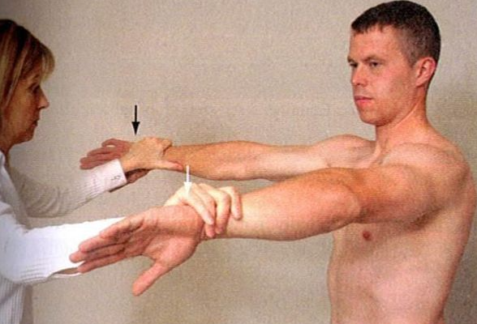 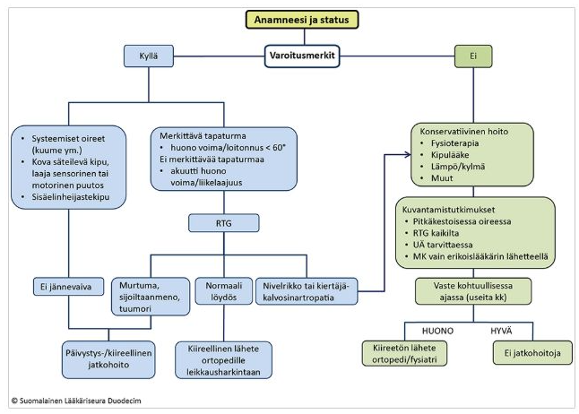4.9 Mikä on yleisin veripolven aiheuttaja?
Ei vaihtoehtoja wikissä, mutta tulisi osata vastata ilman vinkkejäkin.
Solution.
ACL-repeämä4.10 Mikä hermo voi vaurioitua humeruksen diafyysin murtumassa?
Ei vaihtoehtoja wikissä.
Solution.
N. radialisYleisimmät hermovammat humerusmurtumissa:
Olkaluun kirurgisen kaulan murtumat = n. axillaris vaurioituu
Olkaluun varren murtumat = n. radialis vaurioituu
Olkaluun mediaalisen epikondyylin alueen murtumat = n. ulnaris vaurioituu
Olkaluun suprakondylaarisen alueen murtumat = n. medianus vaurioituu
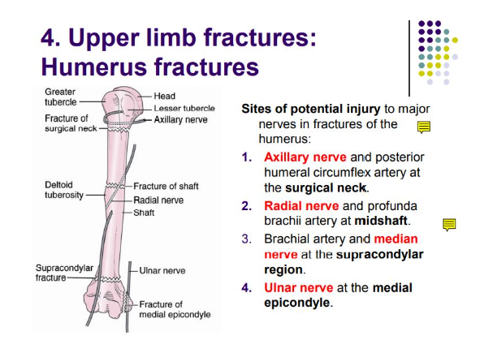4.11 Käytetäänkö U-kipsiä humeruksen proksimaalisen murtuman hoitona?
Solution.
EiU-kipsin käyttö on vähentynyt, nykyään käytetään pääasiassa ortooseja. Mahdollisesti U-kipsi soveltuu olkavarren ala- ja keskikolmanneksen murtumien hoitoon (ainakin niiden alkuvaiheessa), mutta ei ainakaan proksimaalisen murtuman hoitoon.
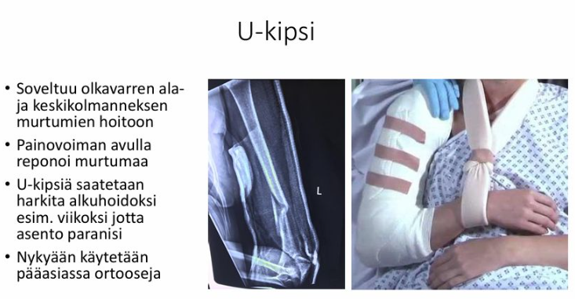4.12 Missä sijaitsee Th7-nikama?
Ei vaihtoehtoja wikissä, mutta veikkaan, että on haettu tätä vastausta: “Th7 sijaitsee angulus inferior scapulaen tasolla”
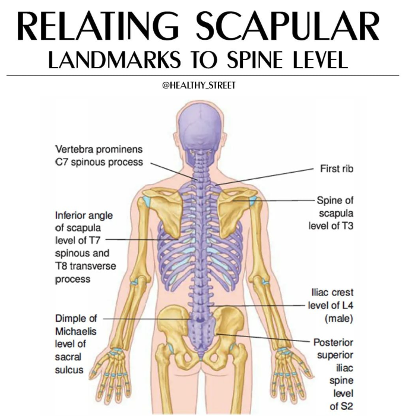
4.13 Burst-murtuma, Chance-murtuma
Ei kysymyksenasettelua wikissä, joten tässä tärkeimmät näiden nikamamurtumien erosta:
Vammamorfologia
- Burst-murtumassa murtuma ulottuu koko nikaman solmun ja ylä- ja alapäätelevyjen läpi ja selkäydinkanavaan työntyvät luukappaleet ovat tavallisia. Erona kiilamaiseen puristusmurtumaan on morfologisesti se, että nikaman solmun etu- sekä takaosa ovat murtuneet moneen osaan (burst siis kulkee kahden denisin pilarin läpi ja on tämän takia instabiili murtuma toisin kuten kiilakompressio, joka murtaa vain etupilarin ja on siten stabiili).
- Chance-murtumassa murtumalinja on horisontaalinen ja nikama jakautuu posterioristen elementtien kautta solmua pitkin
Vammamekanismi
- Burst-murtuma syntyy nikaman solmuun kohdistuvan vahvan aksiaalisen (puristavan) voiman seurauksena
- Chance-murtuman klassinen vammamekanismi on nokkakolarissa, kun auton takamatkustajalla on pelkkä lantioalueen turvavyö. Silloin ylävartalo pääsee jatkamaan matkaa ja vetää lannerangan fleksio-distraktiotyyppisesti rikki.
Stabiliteetti
- Molemmat ovat instabiileja murtumia, koska käsittävät useamman kuin yhden denisin pilarin.
Säteilyperusteiset kuvantamislöydökset
- Burst-murtumassa pedikkelien välisen etäisyyden kasvu ja mahdollisesti posteriorisesti ydinkanavaan siirtyneet luufragmentit
- Paikallinen nikaman kiilamaistuminen yhdistyneenä suurentuneeseen okahaarakkeiden väliseen etäisyyteen (missing spinous process)

4.14 Osteoporoosimurtumat
Ei kysymyksenasettelua wikissä. Tässä nyt jokin mahdollinen kysymys ja vastaus.
Mikä on yleisin osteoporoosimurtuma?
- V: Nikaman kompressiomurtuma
- 70 % nikamamurtumista jää diagnosoimatta, suurin osa ohimeneviä keskiselän kipuja
- Muita yleisiä ovat mm. lonkkamurtuma, rannemurtuma ja olkamurtuma
4.15 Monteggian murtuma
Ei kysymyksenasettelua wikissä. Tässä tärkeimmät tästä murtumasta.
- Ulnan proksimaalikolmanneksen murtuma, jonka yhteydessä radiuksen pään dislokaatio
- Harvinainen aikuisilla ja yleisempää lapsilla
- Hoito yleensä operatiivinen
Muita kyynärvarren murtumaluksaatioita ovat mm. Galeazzi ja Essex-Loprest
- Kyynärvarren murtumaluksaatiot ovat suhteellisen harvinaisia vammoja ja potilaat tulee ohjata päivystyksellisesti jatkohoitoon yksikköön, jossa niiden hoidosta on erityisosaamista
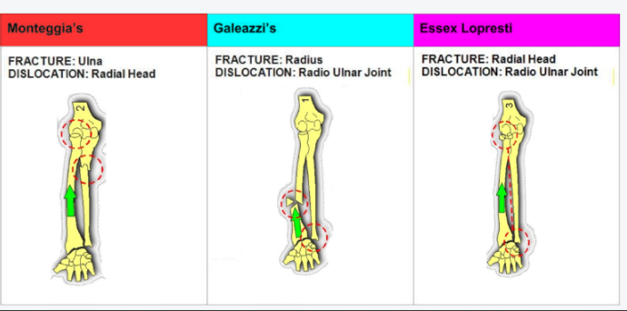
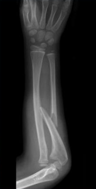
4.16 Galeazzin murtuma
Ei kysymyksenasettelua wikissä. Tässä tärkeimmät tästä murtumasta.
- Radiuksen distaalikolmanneksen murtuma, jonka yhteydessä DRUJ-dislokaatio (ja TFCC (triangular fibrocartilage complex) –vaurio)
- Esiintyy tavallisimmin 9–12-vuotiailla
- Hoito yleensä operatiivinen
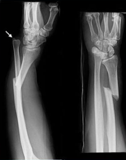
4.17 Terrible triad
Ei kysymyksenasettelua wikissä.
Kyynärnivelen terrible triad = Vammayhdistelmä, joka tarkoittaa kyynärnivelen luksaatiota, johon liittyy capitulum radiin murtuma, ulnan processus coronoideuksen murtuma ja merkittävä nivelsidevaurio. Vamma on hyvin instabiili, ja hoito tulee keskittää kirurgisiin toimintayksiköihin. Nivelen voi varovaisesti yrittää reponoida ja immobilisoida kulmakipsilastaan potilassiirron ajaksi.
Polvessa klassinen vammayhdistelmä eli vaurio ACL, MCL ja mediaaliseen/lateraaliseen meniskukseen on yleensä nimetty unhappy triadiksi (eroaa terrible triadista)

4.18 Lonkkamaljakon murtuma hoitolinjat
Ei kysymyksenasettelua wikissä. Tässä tärkeimmät hoitolinjoista.
- Acetabulummurtumien hoito ei poikkea periaatteiltaan minkään muun kantavan nivelpinnan murtuman hoidosta (tavoitteena on anatominen reduktio, stabiili fiksaatio ja varhainen mobilisaatio riippumatta potilaan iästä). Acetabulummurtumat ovat kuitenkin hoidollisesti haastavia, koska ne ovat usein pirstaleisia, niiden variaatiomahdollisuudet ovat moninaiset ja lantion kirurginen anatomia ja avaukset ovat haastavia.
- Voidaan hoitaa konservatiivisesti tai operatiivisesti tilanteesta riippuen
- Ikä tai osteoporoosi ei ole este leikkaukselle (vanhuksilla leikkauskelpoisuus arvioidaan samoilla kriteereillä kuin lonkkamurtumienkin kohdalla)
- Lopullinen operatiivinen hoito on optimaalista toteuttaa varhaisvaiheessa, ei kuitenkaan tapaturmapäivänä, jolloin vuoto murtumasta on runsaampaa kuin 1-2 vuorokautta myöhemmin.
- Murtumatyypistä riippuen leikkaus suoritetaan joko etuavauksesta (intrapelvinen avaus) tai taka-avauksesta (Kocher-Langenbeckin avaus) tai käyttäen näitä molempia avauksia. Leikkauksena tyypillisesti levytys (tekonivelleikkaus mahdollinen, mutta varsin vähän käytetty murtumien teknisten rajoitusten takia.
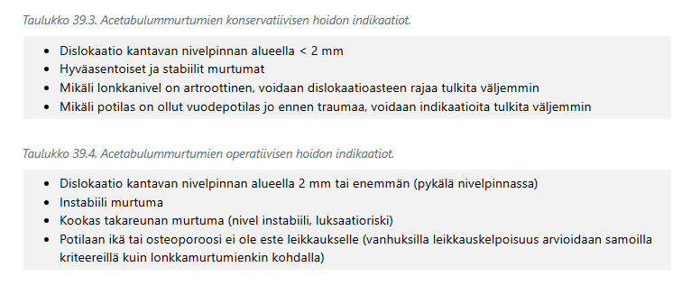
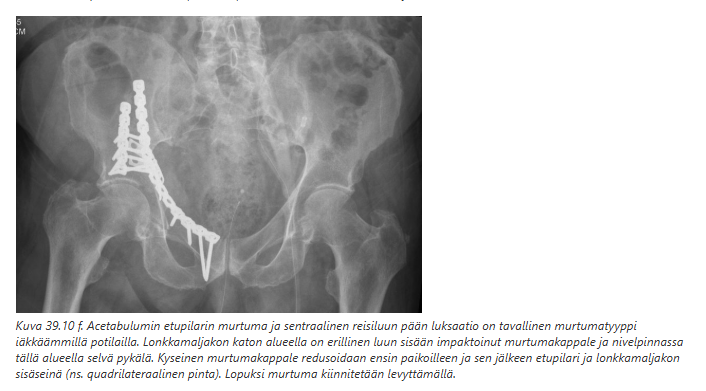
4.19 Diabeetikon Weber b hoito
Ei kysymyksenasettelua wikissä.
Diabetes (ja tietyt muutkin riskitekijät) vaikuttavat niin nilkkamurtuman hoitolinjoihin kuin murtuman oireisiin (diabetespotilas ei mahdollisesti tunne kipua neuropatian takia alaraajassa yhtä helposti kuin ei-diabeetikot).
- Normaalitilanteessa Weber B-murtuman konservatiivinen hoito voidaan toteuttaa näin: Avattava kipsisaapas 3 vkoa, varaus kivun mukaan
- Yli 65-vuotiaat tai diabetes, ASO yms. muu riskitekijä: kipsisaapas 6 vkoa, varaus 3+2+1 (3vk ei varausta, 2vk osittainen varaus, 1vk täysvaraus kivun mukaan)
4.20 Symfyysin täydellinen repeämä: mikä leikkaus?
Täydellisen symfyysirepeämän ensisijainen hoito on leikkaus, joka on tyypillisesti levytys (symfyysilevy). Levytyksen jälkeen voidaan sallia varaus molempiin alaraajoihin kivun rajoissa.
Synnytyksen yhteydessä harvoin syntyvä symfyysin täydellinen repeämä hoidetaan useimmissa tapauksissa samalla levytystekniikalla.
Symfyysiraon leviäminen on merkki symfyysin repeämästä, jolloin joko toinen tai molemmat lantiopuoliskot ovat instabiileja ulkokiertoon. Lantion natiivikuvasta ei voida päätellä symfyysin dislokaatioastetta (diastaasia) vammahetkellä.
Mahdollinen liitännäisvamma on suoran vatsalihaksen (m. rectus abdominis) irtauma yläramuksen pinnasta. Leikkauksen yhteydessä lihas kiinnitetään paikoilleen.

4.22 Liittyykö kiilakompressiomurtumaan neurologisia oireita?
Solution.
Ei tyypillisestiKiilakompressiomurtumassa nikamasolmun etuosa painuu kasaan puristuksen seurauksena eikä taaksepäin spinaalikanavaa kohti työnny luukappaleita -> ei spinaalikanavan vaurio-/ahtaumaoireita ellei mukana ole välilevyrepeämää tai kyfoosi kehity esimerkiksi lukuisten peräkkäisten osteoporoottisten murtumien takia niin suureksi, että neuraalirakenteet venyttyvät korostuvan kyfoosin takia
Vrt. burst-murtumat, joissa murtumafragmentteja tyypillisesti työntyy selkäydinkanavaan -> neurologisia puutosoireita on 65 %:lla potilaista4.23 Lumbosakraalinen dissosiaatio
Ei kysymyksenasettelua wikissä. Tässä tärkeimpiä:
- Sama asia kuin spinopelvinen dissosiaatio
- Liittyy pääasiassa sakrumin H- (tavallisin), Y- tai U-tyypin murtumiin eli molemminpuolisiin vertikaalisiin ristiluun murtumiin, joihin liittyy poikittainen murtumakomponentti. Tämä mahdollistaa selkärangan ja lantiorenkaan irtoamisen toisistaan.
- H-tyypin sakrummurtumassa todetaan tyypillisesti molemmin puolin vertikaaliset murtumalinjat foramen-aukkojen linjassa (II-tyypin murtuma) ja näitä yhdistää poikittainen murtumakomponentti, joka yleensä sijaitsee S1-S2 -tasolla. Tämän seurauksena lanneranka ja sakrumin ylin osa irtoavat sakrumin irrallaan olevasta kaudaaliosasta ja molemmista lantiopuoliskoista.
- Vammakokonaisuuteen voi liittyä myös lantiorenkaan etuosan murtuma tai acetabulummurtuma.
- Lantiohermopunoksen (alaraajojen osittainen halvaus) ja ristiluuhermojen vammat (ns. cauda equina -syndrooma) ovat erityisesti H-tyypin murtumaan liittyen yleisiä.
- Sakrumin dislokoitumista AP-suunnassa käytetään luokittelussa ja toipumisennusteen arvioimiseen


4.24 Mikä on ensisijainen profylaktinen antibiootti koiranpuremissa?
Solution.
Amoksisilliini-klavulaanihappo (aikuiselle 500/125 mg × 3/vrk) 3-5 vuorokautta Koiran puremissa ei aina tarvitse antibioottiprofylaksiaa (vrt. kissan tai ihmisen puremat, jotka ovat tyypillisesti aina suuren riskin puremia). Niissä ei suositella rutiiniprofylaksia, kun hoitoon on hakeuduttu nopeasti eikä kyseessä ole suuren riskin purema.
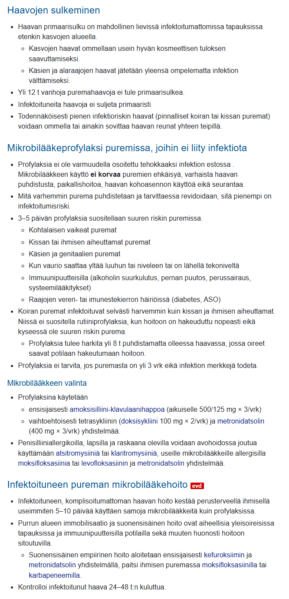4.25 Avomurtuman hoitojärjestys
Ei kysymyksenasettelua wikissä. Tässä tyypillinen hoitojärjestys:
- Mahdollinen verenvuoto pyritään tyrehdyttämään kompressiolla
- Avomurtuma-alue huuhdellaan keittosuolalla, irtolika voidaan poistaa
- Selvä virheasento voidaan oikaista
- Vamma-alue peitetään steriileillä taitoksilla ja raaja lastoitetaan
- Antibioottihoito aloitetaan välittömästi, kun siihen on mahdollisuus. Myös jäykkäkouristusrokotuksen voimassaolo varmistetaan ja annetaan tarvittaessa tehosteannos
- Leikkaushoidon kiireellisyys riippuu vammasta. Potilas leikataan välittömästi, mikäli potilaalla on
- muita henkeä tai toimintakykyä uhkaavia vammoja, jotka vaativat leikkauksen
- kompressioon reagoimaton verenvuoto tai todettu tai epäilty leikkaushoitoa vaativa verisuonivamma
- epäily lihasaitiopaineoireyhtymästä
- erittäin kontaminoitunut haava
Muut kuin edellä kuvatut potilaat voidaan yleensä leikata viimeistään seuraavana aamuna ensisijaisesti ortopedin ja plastiikkakirurgin yhteistyönä. Leikkaussalissa vamma-alue puhdistetaan huolellisesti kirurgisesti ja huuhdellaan matalapaineisella keittosuolahuuhtelulla. Aitiopaineoireyhtymää epäiltäessä kaikki säären lihasaitiot tarkistetaan ja tehdään tarvittaessa faskiotomiat.
Pienienergiaiset vammat, joihin ei liity laajaa pehmytkudosvammaa (Gustilon–Andersonin gradus 1–2), voidaan hoitaa yleensä yksivaiheisesti. Huolellisen puhdistuksen jälkeen murtuma korjataan ja haava suljetaan.
- Suurienergiaiset vammat (Gustilon–Andersonin gradus 3A-C) vaativat pääsääntöisesti vaiheistetun hoidon. Lopullinen murtuman kiinnitys toteutetaan samassa leikkauksessa kuin haavan pysyvä sulku. Suurienergiaiset vammat vaativat usein haavan sulun paikallisella tai mikrovaskulaarisella kielekkeellä
4.26 Irti lähteneen sormen kuljetus
Miten säilöt irronneen sormen oikeaoppisesti?
Solution.
Viileässä, mutta ei jäätyneenäKappale kääritään keittosuolataitoksiin, tämä laitetaan kaksinkertaiseen muovipussiin ja pussit laitetaan jäävesihauteeseen. Itse kudoksen ei siis tule olla kontaktissa jään kanssa, eikä jääpussien välissä, koska kudos ei saa jäätyä.
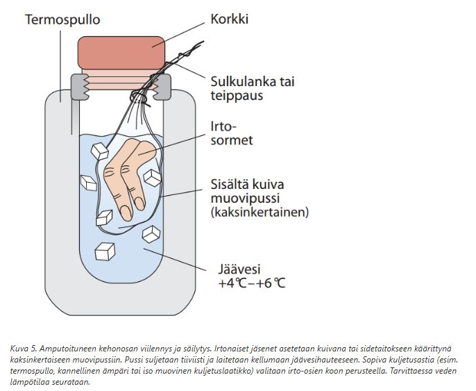4.27 Koko raaja lähtenyt irti paitsi radialishermo. Onko korjauksesssa kyseessä mikro-/makro- revaskularisaatio/replantaatio?
Solution.
MakrorevaskularisaatioReplantaatio = Täysin irronneen raajanosan takaisinkiinnitys
Revaskularisaatio = Verenkierto palautetaan osittain kehossa kiinni olevaan raajaan
Nyt kun raaja on vielä jotenkin kiinni kehossa, ei kyseessä ole replantaatio. Kyseessä on makrorevaskularisaatio, koska liitettävät suonet ja hermot ovat kooltaan suurempia ja irtojäsen sisältää merkittävän määrän lihaskudosta (mikroreplantaatio/-revaskularisaatiossa toimitaan pienien rakenteiden kanssa; esim. käden tai jalkaterän alueen amputoituneen kappaleen takaisinistutusta silloin, kun leikkautuminen on tapahtunut ranteen tai nilkan distaalipuolelta)
Huom. älä koskaan irrota ruumiinosaa pakkaamista varten, vaikka se roikkuisikin vain pienen rakenteen välityksellä kehossa kiinni. Usein on kyseessä tärkeä hermo ja tätä yhteyttä ei pidä katkaista. Vammautunut jäsen kääritään steriileihin natriumkloriditaitoksiin ja lastoitetaan (lähteestä riippuen kohoasentoon tai mahdollisimman anatomiseen asentoon).4.28 Viiltovamman kautta syntynyt koukistajajännevamma kädessä: mitä teet?
Solution.
Sulje haava ja 1-7vrk lähete käsikirurgialleSormien koukistajajänteen vammat ovat paljon ojentajajännevammoja harvinaisempia ja tyypillisesti viiltovammoja.
Käden koukistajajännevammat hoidetaan ensisijaisesti operatiivisesti ja käytännössä koukistajajännevammojen hoito kuuluu aina käsikirurgille (vrt. ojentajajännevammoihin -> suljetuissa vammoissa konservatiivinen hoito (tosin avoimet myös käsikirurgille)). Hoito ei vaadi yleensä päivystyksellistä korjausta, joten 1-7vrk lähete riittää (avohaava tulee kuitenkin sulkea). Korjausleikkausaika järjestetään mielellään viikon kuluessa vammasta. Suora jännekorjaus on yleensä kuitenkin mahdollista vielä 2–4 viikonkin kuluttua, lukuun ottamatta peukalon pitkän koukistajan katkeamia. Päivystysleikkaus on perusteltua ruhjevammoissa, kontaminoituneissa haavoissa tai jos sormen verenkierto on uhattuna.4.29 Missä on vamma Boutonniere-deformiteetissa?
Valitse yksi:
- DIP-nivelen tasolla ekstensorijänteessä
- DIP-nivelen tasolla fleksorijänteessä
- PIP-nivelen tasolla ekstensorijänteessä
- PIP-nivelen tasolla fleksorijänteessä
Solution.
cOjentajajänneaparaatin keskijänteen irtoaminen keskijäsenen tyveltä aiheuttaa alkuun lievän ojennusvajauksen PIP-niveleen. Vastaavasti ojentajajänneaparaatin pääteosaan syntyy ylikireys, joka aiheuttaa DIP-nivelen yliojentumista. Jos tilanteeseen ei puututa alkuvaiheessa, kehittyy krooninen epätasapaino, joka johtaa ojentajajänteen sivuosien putoamiseen sivuille, kunnes niiden momentti lopulta on PIP-niveltä koukistava. Tyvijäsenen pää työntyy ojentajajänneaparaatin läpi, mistä syystä tilannetta kutsutaan napinläpideformiteetiksi (boutonniere-deformiteetti). Lopulta nivelet jäykistyvät virheasentoon ja korjaaminen käy vaikeaksi tai jopa mahdottomaksi
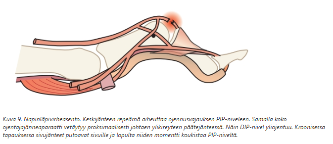4.30 Jäbä saanu säbämailasta volaarisesti osuman: kipu ulnaarisesti hieman rannekuopasta(?) distaalisesti, mikä luu murtunut?
Valitse yksi:
- hamatum
- radialis
- triquetrum
Solution.
a (todennäköisesti tarkemmin vasaralisäkkeen murtuma)Hamatumin hamuluksen murtuma voi olla akuutti tai rasitusmurtuma. Se syntyy yleensä mailapelissä, kun mailaan tulevan iskun tai mailan varren toistuvan kompressioliikkeen energia ohjautuu mailaa puristavan käden kämmeneen.
Oireena on kipu hypothenarissa tartuntaotteessa ja joskus myös puutuminen IV–V-sormissa, kun murtuma ärsyttää hamuluksen vieressä kulkevaa kyynärhermoa. Hamuluksen asennon muuttuessa voi myös karpaalitunneli ahtautua ja myös medianushermo joutua pinteeseen
Palpaatioarkuus tuntuu tyypillisesti hamuluksen kärjessä, joka palpoituu n. 2 cm herneluun (os pisiforme) distaalipuolella ja radiaalisesti
Murtuma ei näy tyypillisessä ranteen röntgenkuvassa. Rannetunneliprojektiossa murtuma näkyy useimmilla potilailla (n.72 %:lla) . TT-tutkimus varmistaa tarvittaessa murtuman.
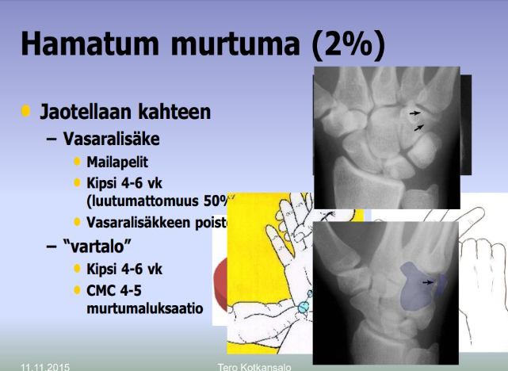4.31 Vanhan veneluun murtuman hoito
Ei kysymyksenasettelua wikissä, mutta onko operatiivinen vai konservatiivinen?
Solution.
OperatiivinenJos veneluumurtuman hoito on viivästynyt yli 4 viikolla viivästyneen diagnoosin vuoksi, on ensisijainen hoito leikkaus, koska hoidon viivästyminen yli 4 viikolla huonontaa kipsihoidon luutumistuloksia merkittävästi.
Luutumattomiin veneluun murtumiin voi törmätä, jos murtuma ei näkynyt ensimmäisissä kuvissa eikä tilannetta seurattu tai kuvattu tarkemmin, jos potilas ei ylipäänsä hakeutunut hoitoon tai jos murtuma hoidosta huolimatta ei ole luutunut seurannan aikana4.32 Mikä radiusmurtuman huonoin ennustetekijä?
Valitse yksi:
- inklinaatio+lyhentymä
- nivelraon rako+radiaalinen kallistuma
- vanha ikä + jotain
Solution.
Vanha ikäKäypä Hoidon mukaan: “Naissukupuoli, yli 60–65 vuoden ikä ja murtuman dorsaalinen pirstaleisuus ilmeisesti ennustavat värttinäluun murtuman asennon pettämistä (instabiliteettia) kipsihoidon aikana. Näistä ikä on instabiliteetin tärkein ennusteellinen muuttuja eli iäkkäällä potilaalla murtuma on suurella todennäköisyydellä radiologisin parametrein arvioituna instabiili riippumatta murtuman muista ominaisuuksista”
Samoin kirjoitetaan radiologisista ennustetekijöistä, jos niistä satuttaisiin kysyä tulevissa tenteissä: “Värttinäluun lyhentymä, nivelpinnan pykälä ja rako ovat merkittävimmät huonon toiminnallisen lopputuloksen ennustajat”.4.33 Olkapään proks murtuman hoito: kipsi vai kantoside
Solution.
Kantoside
Konservatiivisesti hoidettuna yläraaja tuetaan 2-3 viikoksi kantositeeseen. U-kipsiä ei pidä käyttää proksimaalisten humerusmurtumien hoidossa.
Kuntoutus alkaa varhain: kevyet heiluriliikkeet sekä kyynärnivelen ja ranteen harjoitteet viikon sisällä kivun hellittäessä. Aktiiviset kiertoliike- ja loitonnusharjoitukset alkavat 3-5 viikon jälkeen. Lihaskuntoutukseen ja humeroskapulaarisen liikerytmin palauttamiseen kuluu aina useita viikkoja.
Murtuman asennon säilymistä konservatiivisen hoidon aikana seurataan röntgenkuvin ainakin 1, 3 ja 6 viikon kohdalla ja pidempäänkin, mikäli luutumisesta on epävarmuutta.4.34 Kaularangassa murtuma
Ei kysymyksenasettelua wikissä eikä myöskään esimerkkikuvaa, joten tässä mahdollinen kysymys: Tunnista murtuma kaularangan TT-kuvasta.
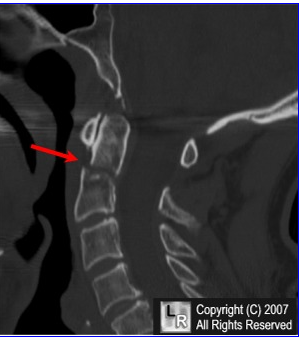
Solution.
Densin murtuma (tyypin II)
Densin tyypin II murtuma on tyypillisin dens-murtuma. Siinä on densin tyven poikkimurtuma (tyyppi 1 = kärjen avulsiomurtuma, tyyppi 3 = corpusalueen murtuma). Densin murtumien vammamekanismi vaihtelee, voi tapahtua sekä ekstensiossa että fleksiossa ja samoin joko kompression kanssa tai ilman sitä
Tyypin II densin murtumiin liittyy melko suuri luutumattomuuden ja pseudoartroosin riski. Hoidetaan potilaasta ja murtumasta riippuen konservatiivisesti tai operatiivisesti.
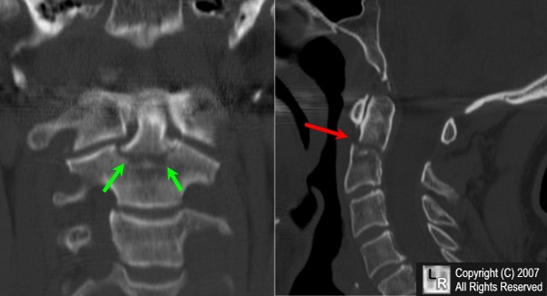4.35 Lannerangan murtuma
Ei kysymyksenasettelua wikissä eikä myöskään esimerkkikuvaa, joten tässä mahdollinen kysymys: Tunnista murtumatyyppi (burst, kompressio, chance yms) lannerangan TT-kuvasta.
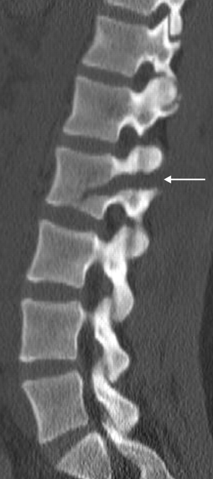
Solution.
Chance 4.36 Nivelkierukan korjaus: missä repeämässä paras?
Valitse yksi
- Hyvin verisuonitetun alueen vamma
- Radiaalinen repeämä
Solution.
a
Vain osa traumaattisista kierukkarepeämistä siis soveltuu korjattaviksi. Korjaukseen soveltuvia repeämiä ovat pitkittäiset vertikaaliset repeämät, jotka sijaitsevat kierukan laidalla verisuonitetulla alueella. Aikuisella tämä käsittää 20-30 % kierukan pinta-alasta ulottuen 3-4 mm kierukan ulkolaidasta polvinivelen keskiosaan (zone 1 ja 2, ISAKOS Knee Committee)
Repeämän kiinnitys voidaan suorittaa tähystystekniikalla joko ompeleilla tai all-inside -kiinnittimillä. Mahdollinen eturistisiteen repeämä tulee korjata samalla, jolloin kierukkakorjauksen paranemisennuste myös paraneeNivelkierukat koostuvat kolmesta zonesta.
- Red-Red-zone (1) = uloin kolmannes; saa eniten verenkiertoa
- Red-White-zone (2) = keskimmäinen kolmannes; saa jokseenkin verenkiertoa, mutta vähemmän kuin uloin
- White-White-zone (3) = sisin kolmannes; saa hyvin vähän verenkiertoa ja on tämän takia valkoinen; sitä ruokkii nivelneste
Nivelkierukan repeämät voidaan jakaa koon, lokaation ja morfologian perusteella ISAKOS-luokittelussa kuuteen eri luokkaan.
- Jos repeämä on esimerkiksi pääasiassa valkoiselta alueelta, niin heikon verenkierron takia ne parantuvat huonosti. Esimerkki tämän alueen vammasta on radiaalinen repeämä.
- Jos taas repeämä on punaisella alueella, niin hyvän verenkierron takia ne parantuvat hyvin
Traumaattiset kierukkarepeämät hoidetaan tähystysleikkauksella. Tavoitteena on kierukan korjaaminen kiinnittämällä revennyt osa kierukkaa paikoilleen. Niissä tapauksissa, joissa kiinnitys ei ole mahdollinen, tehdään säästävä osapoisto.
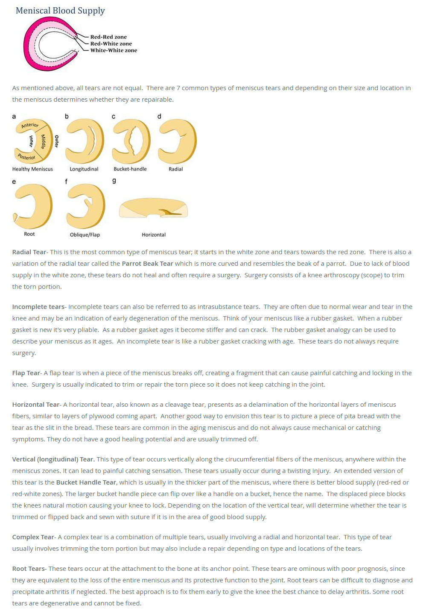
4.37 Mikä ei kuulu rotator cuffiin?
Ei vaihtoehtoja wikissä, mutta tässä mahdollinen asetelma.
Valitse yksi
- supraspinatus
- teres major
- subscapularis
- infraspinatus
- teres minor
Solution.
b
Rotaror cuff (kiertäjäkalvosin) = supraspinatus, infraspinatus, teres minor ja subscapularis
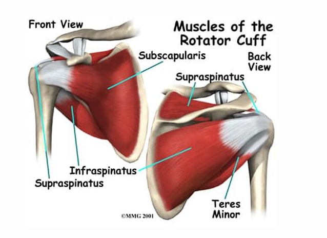4.38 Hill-Sachs
Ei kysymyksenasettelua wikissä. Tässä tärkeimmät:
- Hill-Sachsin vaurio tarkoittaa olkanivelen anteriorisen luksaation takia tapahtuvaa posterolateraalisen humeruksen pään painaumamurtumaa (työntyminen glenoideumin anterioriseen reunaan aiheuttaa vamman)
- On myös ns. reverse hill-sachs vaurio, joka tapahtuu posteriorisen luksaation takia -> anteromediaalinen painauma humeruksen päässä
- Tapahtuu usein Bankartin leesion kanssa (toinen vamma, joka tapahtuu olkaluksaatiossa); Bankartin leesio tarkoittaa olkanivelen etuosan rustoisen renkaan eli labrumin irtoamista/repeämää tyypillisesti olkanivelen sijoiltaanmenon yhteydessä (repeämä voi olla luinen -> bony bankart)
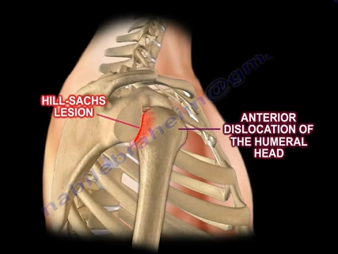
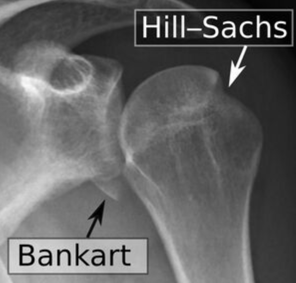
4.39 Onko murtumaa
Ei esimerkkikuvaa wikissä ja muutenkin heikosti pääteltävissä oleva kysymyksenasettelu, mutta tässä mahdollinen kysymys. Onko murtumaa tässä kyynärnivelen röntgenissä? Jos on niin mikä murtuma?
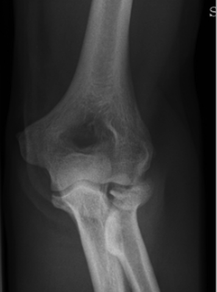
Solution.
On murtuma, capitulum radiin murtuma4.40 Humerusmurtuman jälkeen ranteen ekstensio ei toimi, mikä hermo vaurioitunut?
Ei vaihtoehtoja, mutta tulisi tietää ilmankin.
Solution.
N. radialisSormien loitonnus ei onnistu = n. ulnaris vaurio
Ranteen ja sormien ekstensio ei onnistu = n. radialis vaurio
Peukalon koskettaminen pikkurilliin (opponens-toiminta) ei onnistu ja sormien/ranteen fleksio heikompaa = n. medianus vaurio4.41 Jos artroosia, käytetäänkö kokoproteesia?
Kysymyksenasettelussa ei tarkenneta, mistä alueesta on kyse, mutta yleensä esim. lonkkamurtumissa juuri suositaan kokotekoniveltä, jos murtumanpuoleinen lonkkanivel on reuman tai nivelrikon tuhoama. Samoin tehdään monilla muilla anatomisilla alueilla, jos tarvitaan tekoniveltä artroosipotilaalla.
4.42 Poistetaanko ydinnaula?
Ei vaihtoehtoja. Mitä ydinnaulalle tyypillisesti tehdään?
Solution.
Ei poisteta rutiinisti
4.43 Thompsonin testi, mitä testaa?
Ei vaihtoehtoja, mutta tulisi tietää muutenkin.
Solution.
Akillesjänteen repeämää
Jos pohjelihaksen puristus ei aiheuta nilkan plantaarifleksiota, testi on positiivinen eli jänne on revennyt

4.44 Sormen fleksorin ja luun murtuma: hoito?
Ei vaihtoehtoja wikissä, tässä hoitolinja:
- Perusperiaate: koukistajajännevammat (oli sitten murtumaa tai ei) kuuluvat käsikirurgin hoitoon ja usein hoito on operatiivinen
- Jos kyseessä on esim. Jersey finger -murtuma, jossa syvän koukistajajänteen insertioalueella basaaliseen volaariseen murtumaan syntyy dislokaatio FDP-jänteen vetämänä, on hoito operatiivinen (fiksaatiossa pullout-ommel tai k-piikit 5-6 viikkoa).
4.45 Millaisessa asennossa jalka on tyypillisesti lonkkamurtumassa?
Solution.
Ulkorotaatiossa ja lyhentynyt
4.46 Telaluumurtuman hoitolinjat
Ei vaihtoehtoja wikissä, tässä tärkeimmät telaluun murtumista:
Vammamekanismi
- Telaluun murtumat voidaan jakaa korkean vammaenergian aiheuttamiin telaluun kaulan ja runko-osan murtumiin sekä toisaalta matalaenergisen vääntömekanismin seurauksena syntyviin telaluun ulokkeiden (processus lateralis, processus posterior) murtumiin. Telaluun murtumien ensimmäinen ”epidemia” koettiin ensimmäisen maailmansodan lentäjien keskuudessa. Tuolloisten lentokoneiden peräsintä ohjattiin jalkatangolla, joka iskeytyi maahan putoavassa koneessa kovalla voimalla jalkapohjaan aiheuttaen telaluun murtuman. Sittemmin vastaava vammamekanismi on aiheuttanut merkittävän määrän telaluun murtumia moottoripyöräilijöille, joilla jalkatappi voi toimia lentokoneen ohjaustangon tapaan.
Kuvantaminen
- Telaluun murtumien diagnostiikassa tarvitaan lähes poikkeuksetta laadukkaiden natiiviröntgenkuvien ohella tietokonetomografiatutkimusta. Natiiviröntgenkuvissa näkyvien murtumien kohdalla TT-kuvaus on tarpeellinen hoidon suunnittelussa, ja toisaalta osa telaluun ulokkeiden murtumista on hankalaa, jopa mahdotonta todeta natiiviröntgenkuvista. TT-kuvaus onkin usein aiheellinen nilkkansa loukanneella potilaalla, jonka kliiniset löydökset eivät tunnu sopivan nilkan lateraalisten nivelsiteiden vammaan mutta toisaalta natiiviröntgenkuvissa ei ole selkeitä murtumia todettavissa.
Luokittelu
- Telaluun kaulan murtumissa käytetyin luokitus on Hawkinsin luokitus. Luokituksella on jossain määrin ennustearvoa telaluun murtumien komplikaation, avaskulaarisen nekroosin, esiintyvyyden suhteen. Mitä korkeampi Hawkinsin luokka, sitä korkeampi on riski avaskulaariselle nekroosille.
- Telaluun verenkierrosta noin 2/3 tulee sinus tarsiin ja tarsaalitunnelin kautta tulevista verisuonista. Nämä vaurioituvat helposti dislokoituneen telaluun kaulan murtuman syntyessä.
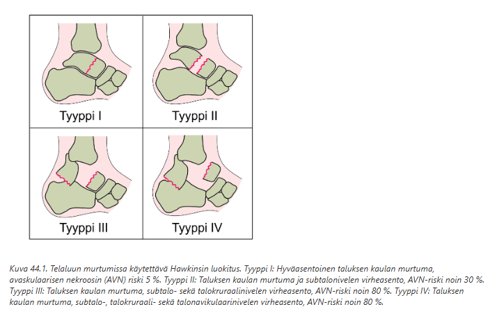
Hoito
- Telaluun kaulan murtumista valtaosa vaatii operatiivisen hoidon. Ainoastaan TT-kuvauksessakin täysin dislokoitumaton murtuma voidaan hoitaa konservatiivisesti 6 viikon mittaisella kipsihoidolla (lyhyt saapaskipsi) ja samankestoisella varauskiellolla. Käytännössä dislokaation poissulkeminen vaatii TT-kuvauksen.
- Jos murtumaan liittyy voimakas pehmytkudosturvotus, on järkevää odottaa 1-2 viikon ajan turvotuksen laskemista ennen kuin lähdetään avoreduktioon. Telaluun murtumaan liittyvät luksaatiot (Hawkins 2-4) tulee kuitenkin reponoida sulkeisesti välittömästi ja tarvittaessa kiinnittää ihon läpi porattavilla K-piikeillä.
- Telaluun murtumien lopullisessa kiinnityksessä käytetään tekniikoina avoreduktiota ja murtumakappaleiden kiinnitystä toisiinsa joko ruuveilla tai levyillä
- Myös leikkaushoidon jatkohoitona tulee käyttää lyhyttä saapaskipsiä ja varauskieltoa ainakin 6 viikon ajan.
- Rtg-kontrolli ainakin 6+12vk ja myöhäiskontrollia noin puolen vuoden kohdalla voidaan pitää aiheellisena mahdollisen lieväoireisen avaskulaarisen nekroosin aiheuttaman telaluun ryhdin huonontumisen toteamiseksi
- Telaluun ulokkeiden murtumat voidaan useimmiten alkuvaiheessa hoitaa konservatiivisesti kipsi-immobilisaatiolla ja varauskevennyksellä. Näihin murtumiin voi liittyä pienten murtumakappaleiden luutumattomuutta. Mikäli tällainen tila on kivulias, se voidaan hoitaa luutumattomien murtumafragmenttien poistoleikkauksella. Mikäli telaluun ulokkeen murtuma on kookas ja dislokoitunut, tulee kyseeseen murtumakappaleiden kiinnitys jo primaarivaiheessa.
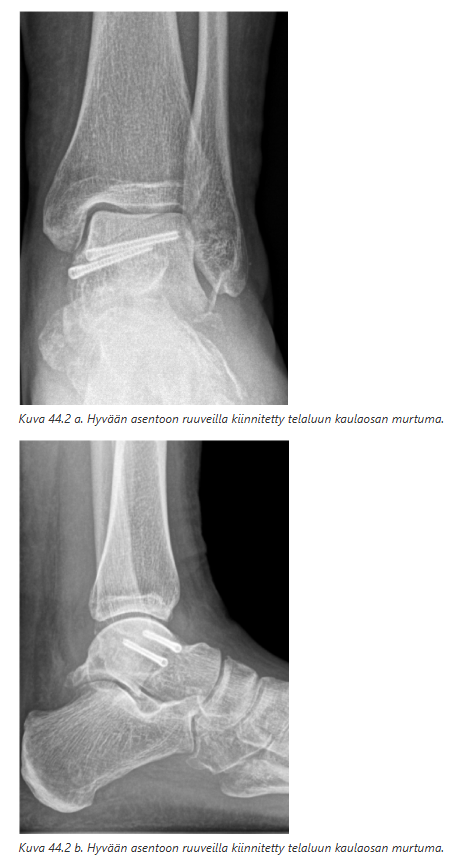
4.47 Reisiluun kaulassa murtuma, mikä hoito?
Ei vaihtoehtoja wikissä
- Reisiluun collummurtumat ovat siis lonkkamurtumia ja ne lähes aina hoidetaan operatiivisesti. Poikkeustapauksissa hyväasentoinen ja usein hieman kasaan painunut (impaktoitunut) murtuma voidaan hoitaa konservatiivisesti (huomattavan korkea leikkausriski, vuodehoitoinen potilas tai vastaava merkittävä potilaskohtainen syy).
- Leikkaustapa eroaa potilaan mukaan. Valtaosa vanhusten reisiluun kaulan murtumista hoidetaan puolitekonivelellä. Mikäli potilas on hyväkuntoinen, aktiivinen liikkuja, hänellä ei ole päihdeongelmaa ja katsotaan, että murtuman luutumiselle olevat muut edellytykset ovat kunnossa, voidaan murtuma hoitaa osteosynteesillä eli murtuman kiinnityksellä. Jos murtumanpuoleinen lonkkanivel on reuman tai nivelrikon tuhoama, on paremman lopputuloksen saavuttamiseksi usein järkevää asentaa leikkauksessa kokotekonivel.
4.48 Mikä on Morel-lavallée pehmytkudosvamma?
Ei vaihtoehtoja wikissä, mutta yritä vastata ilman.
Solution.
Erityinen tylppä pehmytkudosvamma
Vamma, jossa iho ja subcutis irtoavat lihasfaskiasta, jolloin samalla segmentaaliset perforanttisuonet repeävät. Näin syntyneeseen suljettuun tilaan vuotaa verta ja kertyy nekroottista rasvaa.
Tyypillinen traumaattisessa lantionmurtumassa. Eponyymiä käytetään kuvaamaan myös vastaavia pehmytkudosvammoja muillakin anatomisilla alueilla. Vammasta käytetään myös nimitystä degloving-vamma eli nylkiintymisvamma (usein kuitenkin degloving on avonainen)
Hoitovaihtoehtoina ovat perkutaaninen dreneeraus ja avoin kirurginen revisio. Perkutaanisessa tekniikassa pienestä avauksesta tehdään onkalon kirurginen puhdistus. Onkaloon jätetään suljettu imudreeni, joka poistetaan, kun eritys putoaa < 30 ml/vrk. Avoimessa leikkauksessa koko onkalo avataan ja tehdään kirurginen puhdistus, jossa kaikki kuollut kudos poistetaan. Onkaloon jätetään dreeni ja haava suljetaan. Molemmilla hoidoilla on saavutettu hyviä tuloksia.
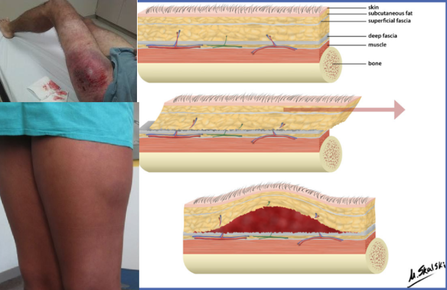4.49 Weber a b c hoitolinjat
Wikissä ei vaihtoehtoja, tässä tärkeimmät hoitolinjoista:
- Weber a tyypillisesti konservatiivisesti (avattava kipsisaapas nilkka 90 asteen kulmassa 3vk, varaaminen kivun mukaan, trombiprofylaksia 3vk, ei rtg-kontrolleja rutiinisti)
- Weber b joko kons (jos stabiili) tai oper (jos instabiili eli nivelhaarukka ei kongruentti). Kons hoito on sama kuin Weber A, paitsi rtg-ktrl 1vk+3vk. Jos potilas yli 65-vuotias tai diabetes, ASO yms. muu riskitekijä, niin kipsisaapas 6 vkoa, varaus 3+2+1, trombiprofylaksia 3vk.
- Weber c käytännössä aina oper (mikäli poikkeuksellisen vakaa, voi olla kons).
- Bi- ja trimalleolaarimurtumat sekä isoloidut mediaalimalleolin murtumat ja avomurtumat ovat operatiivisesti hoidettavia.
4.50 PCL repeämän ilmentymä
Valitse yksi:
- Sag sign on parempi kroonisen vamman merkkinä
- Sag sign on parempi akuutin vamman merkkinä
Solution.
aSag sign on useimmiten positiivinen kroonisissa vammoissa, mutta heti tapaturman jälkeen quadricepsjännityksestä johtuen sag-asentoa ei useinkaan todeta, vaikka PCL on kokonaan revennyt.
Palpoiden normaalitilanteessa polven ollessa 90° fleksioasennossa tibian etureuna (mediaalipuoli) on noin 1 cm edempänä kuin femurkondyylien nivelpinta (tibial step off). Kun PCL on revennyt, tämä ns. tibian anteriorinen step off häviää.
Takavetolaatikkokoe on luotettavin kliininen testi PCL-vammojen diagnostiikassa. Testiä tehtäessä tulee huomioida tibian lähtöasento, posteriorinen sag-asento.
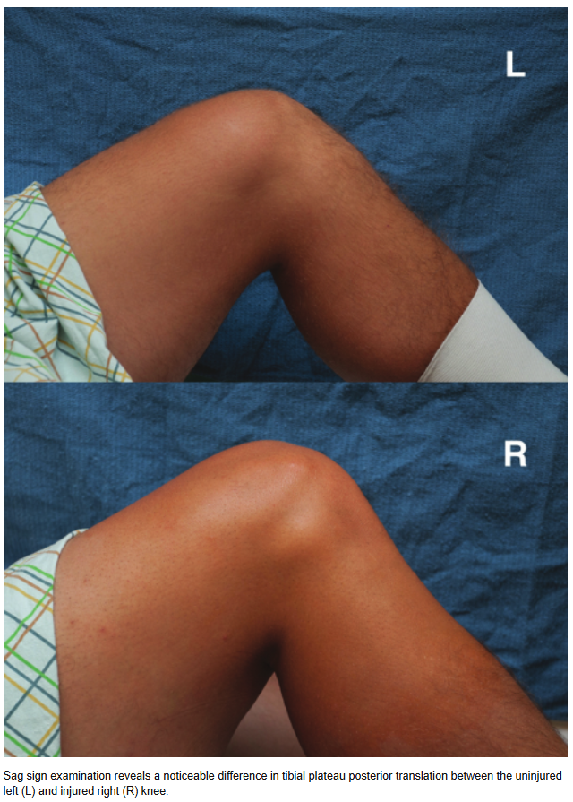4.51 Lantiorenkaan murtumat ja lantiovyö
Ei vaihtoehtoja wikissä
- Vuotavan lantionmurtumapotilaan hoito edellyttää nopeaa ja tehokasta sokin hoitoa ja vuodon tyrehdytystä sekä epätukevan lantiorenkaan väliaikaista tukevoittamista. C-tyypin lantiorenkaan murtumissa ja B-tyypin open book -vammoissa lantiorengas stabiloidaan väliaikaisesti joko lantiovyöllä (yleensä ensisijainen), ulkoisella kiinnityksellä (eksterni fiksaattori) tai C-clampillä.
4.52 Hermovammat miten ilmenee
Valitse yksi
- kipu
- ihon kuivuminen
- ihon värimuutos
- kaikki ylläolevista
Solution.
d
4.53 Kelluva olkapää
Ei vaihtoehtoja wikissä. Tässä tärkeimmät tästä vammasta:
- Kelluva olkapää tarkoittaa, että potilaalla on samanaikainen lapaluun kaulan murtuma ja ipsilateraalinen solisluun murtuma (tyypillisesti tarkemmin claviculan keskiosan murtuma). Yläraaja on kokonaisuudessaan menettänyt luisten rakenteiden tuen - floating shoulder.
- Edellyttää leikkaushoitoa; tapahtuu stabiloimalla ainakin toinen murtumista.
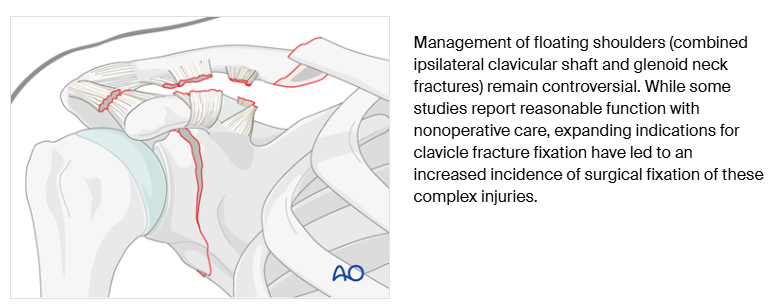
4.54 Mikä murtuma kyseessä
Ei esimerkkikuvaa wikissä. Mutta tässä mahdollinen kysymys: Tunnista ja nimeä murtuma kuvasta.
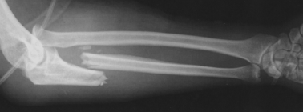
Solution.
Monteggia-murtuma
Monteggian murtumalla tarkoitetaan samanaikaista ulnan proksimaalisen kolmanneksen murtumaa ja radiuksen proksimaalipään sijoiltaanmenoa. Murtuma aiheutuu usein suorasta iskusta tai väännöstä kyynärvarren ollessa pronatoituneena.
4.55 Mikä murtuma kyseessä
Ei esimerkkikuvaa wikissä. Mutta tässä mahdollinen kysymys: Nimeä kuvassa näkyvä murtuma.
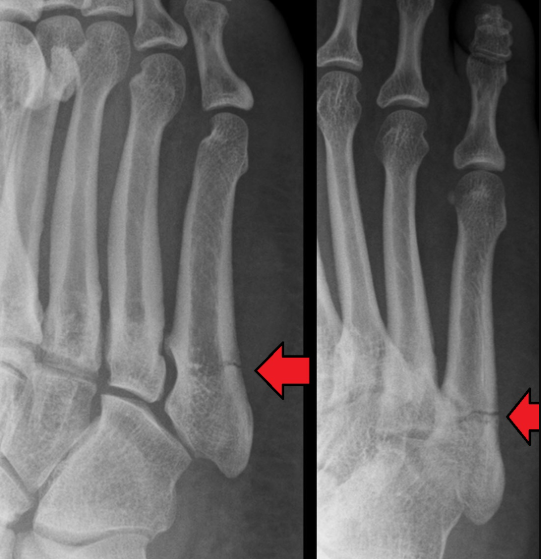
Solution.
Jonesin murtuma
Jonesin murtuma tarkoittaa viidennen jalkapöytäluun metafyysin ja diafyysin rajalle (n. 2,5cm tyvestä distaalisuuntaan) sijoittuvaa murtumaa. Jonesin murtuma voi olla rasitusmurtuma, mutta syntyy useimmiten vääntövammana, kuten myös proksimaalinen avulsiomurtuma (peroneus brevis -jänne repäisee palan). MT V:n proksimaalinen diafyysimurtuma taas on yleensä rasitusmurtuma

4.56 SAFE asentoinen kipsi. Millainen asento tämä on?
Ei vaihtoehtoja wikissä, mutta tulisi osata vastata ilmankin.
Solution.
Sormi- ja metakarpaalimurtumien immobilisaatioasento
Ranne lievä (n. 10-40°) ekstensio, Mp-nivelet (rystyt) 60-90° flexio, Ip- nivelet (sormet) suorina
Käytetään sen takia, että se parhaiten suojaa nivelten jäykistymiseltä. Vain ne jäsenet asetetaan tähän asentoon, jotka tarvitsevat immobilisaatiota.
Esim. metakarpaaliluiden diafyysimurtumat voidaan usein hoitaa konservatiivisesti safe-asentoisella lastoituksella n. 4 viikon ajan.
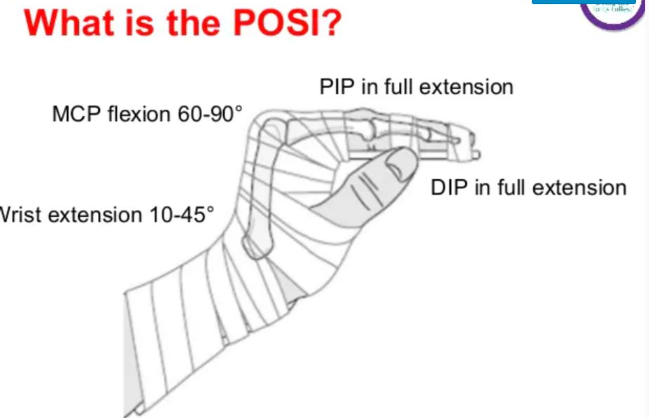4.57 Humeruksen yläosan murtuma liitännäisvammana minkä hermon vamma?
Ei vaihtoehtoja wikissä, mutta tulisi osata vastata ilmankin.
Solution.
N. axillaris Olkaluun kirurgisen kaulan murtumat = n. axillaris vaurioituu
Olkaluun varren murtumat = n. radialis vaurioituu
Olkaluun mediaalisen epikondyylin alueen murtumat = n. ulnaris vaurioituu
Olkaluun suprakondylaarisen alueen murtumat = n. medianus vaurioituu
4.58 Akillesjänteen repeämän diagnostiikka ja hoito
Ei vaihtoehtoja wikissä. Tässä tärkeimmät:
- Diagnoosi useimmiten kliininen (Thompsonin koe). Vain tarvittaessa MK tai UÄ. Röntgenkuva epäiltäessä kantaluun murtumaa.
- Hoito on useimmiten konservatiivinen, koska konservatiivisella, ortoosilla toteutetulla hoidolla saavutetaan käytännössä sama paranemistulos kuin operatiivisella hoidolla. Tyypillisesti aluksi asetetaan päivystystilanteessa equinus-kipsi (jalka hieman plantaarifleksiossa, mikä tuo jänteen päät paremmin yhteen) ensimmäiseksi pariksi viikoksi, tämän jälkeen ortoosi n. 6-8vk asti vammasta. Jos kipsin vaihdon yhteydessä akillesjänteen päät eivät ole ottaneet kiinni toisiinsa, on syytä harkita operatiivista hoitoa.
- Immobilisaatiohoidon jälkeen ei vielä sallita eksentrisiä harjotteluita heti ja kantakoroketta suositellaan käytettävän parin kuukauden ajan. Hyppykielto tyypillisesti 6kk asti. Vaikka jänne olisi kuntoutuksen alkuvaiheessa kivuton, se ei vielä kestä maksimirasitusta.
4.59 Polvi kokee valgisoivan vamman, mikä vamma todennäköisin?
Valitse yksi:
- LCL
- MCL
- LCL & ACL
- MCL & ACL
Solution.
d (tai b)
ACL-repeämä on polven yleisin yksittäinen vaurio, joka vaikuttaa oleellisesti polven stabiiliuteen. Se syntyy tyypillisesti valgisoivan kiertovääntövamman seurauksena. Valgisoivissa vääntövammoissa repeää usein myös MCL, joko yksin tai vaikeammissa tilanteissa kombinoituneena ACL-repeämään ja/tai sisemmän tai ulomman nivelkierukan traumaattiseen repeämään. ACL+MCL on yleisin polven moninivelsidevamma.
Kysymys on wikissä hieman heikosti kuvailtu. Jos on pelkkä lievä vääntövamma eli ulkoinen voima työntää polven valgukseen, niin MCL voi rupturoitua useimmiten yksin. Jos taas mukana on kiertoa tai vääntö on vaikea-asteinen, niin ACL+MCL on yleisin vamma.
Moninivelsidevammoissa korjataan (avulsiovammat) tai rekonstruoidaan kaikki polven revenneet nivelsiteet. Poikkeuksen muodostavat MCL-vammat, jotka useimmissa tapauksissa voidaan hoitaa konservatiivisesti polviortoosilla, kun muut revenneet nivelsiteet rekonstruoidaan varhaisvaiheessa. Polven moninivelsidevammoissa leikkaus pyritään tekemään 2.-3. viikon aikana vammasta lukien.
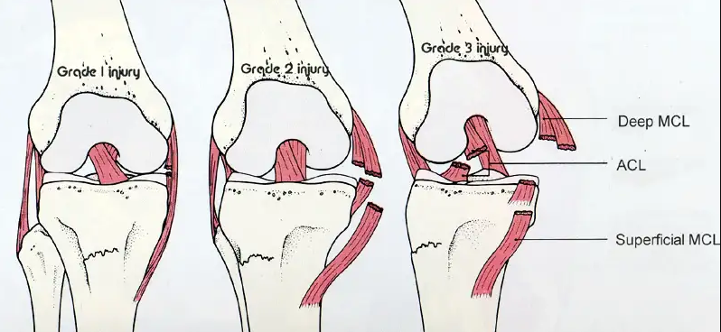4.60 Puoli vuotta vanha Scaphoideum murtuma. Miten hoidat?
Ei vaihtoehtoja wikissä, mutta aikaisemmin jo käyty läpi näissä tärpeissä.
Solution.
Operatiivinen hoito
Jos veneluumurtuman hoito on viivästynyt yli 4 viikolla viivästyneen diagnoosin vuoksi, on ensisijainen hoito leikkaus, koska hoidon viivästyminen yli 4 viikolla huonontaa kipsihoidon luutumistuloksia merkittävästi.
Luutumattomiin veneluun murtumiin voi törmätä, jos murtuma ei näkynyt ensimmäisissä kuvissa eikä tilannetta seurattu tai kuvattu tarkemmin, jos potilas ei ylipäänsä hakeutunut hoitoon tai jos murtuma hoidosta huolimatta ei ole luutunut seurannan aikana4.61 Mikä murtuma ja hoito
Wikissä ei esimerkkikuvaa eikä vaihtoehtoja. Tässä esimerkkikysymys: Kuvassa lapsi. Mikä murtuma ja mikä hoito?
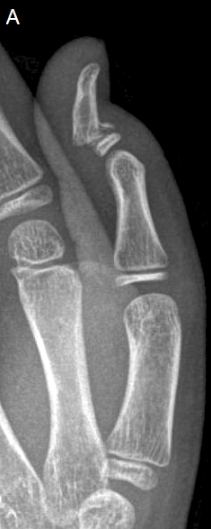
Solution.
Peukalon kärkijäsenen kasvulevymurtuma, operatiivinen hoito
Kyseessä on tarkemmin ottaen Salter-Harris II- tai Peterson II-luokan murtuma. Vastaa aikuisen ns. pesäpallosormivammaa (mallet finger). Jos tämä on reposition jälkeinen kuva, niin tarvitaan operatiivista hoitoa (usein vaikka olisikin reposition jälkeen paikallaan, niin tarvitaan operatiivista hoitoa nuorilla lapsilla, koska he eivät muuten aina noudata absoluuttista fleksiokieltoa kuutta viikkoa, vaikka nivel lastoitettaisiinkin suoraksi (ei yliojennukseen))

4.62 Milloin kyynärpään luksaatio tulisi reponoida?
Ei vaihtoehtoja wikissä, mutta vastaus on kuten tyypillisesti muissakin luksaatioissa: heti tutkimuksen jälkeen. Tutkimuksena riittää status ja rtg-kuva.
Koska suurimpaan osaan kyynärnivelen sijoiltaanmenoista ei liity merkittäviä nivelsidevammoja, on tämä yleensä riittävä hoito. Reposition jälkeen kyynärnivel tuetaan kantositeeseen 2 viikon ajaksi.
4.63 Mikä antibiootti infektoituneeseen puremahaavaan?
Infektoituneen, komplisoitumattoman haavan hoito kestää perusterveellä ihmisellä useimmiten 5–10 päivää käyttäen samoja mikrobilääkkeitä kuin profylaksissa
- Käytetään siis yleensä amoksisilliini-klavulaanihappo (aikuiselle 500/125 mg × 3/vrk)
- Vaihtoehtoisesti tetrasykliinin (doksisykliini 100 mg × 2/vrk) ja metronidatsolin (400 mg × 3/vrk) yhdistelmää
- Penisilliiniallergikoilla, lapsilla ja raskaana olevilla voidaan avohoidossa joutua käyttämään atsitromysiiniä tai klaritromysiiniä, useille mikrobilääkkeille allergisilla moksifloksasiinia tai levofloksasiinin ja metronidatsolin yhdistelmää
- Purrun alueen immobilisaatio ja suonensisäinen hoito ovat aiheellisia yleisoireisissa tapauksissa ja immuunipuutteisilla potilailla sekä muuten huonosti hoitoon sitoutuvilla. Suonensisäinen empiirinen hoito aloitetaan ensisijaisesti kefuroksiimin ja metronidatsolin yhdistelmällä, paitsi ihmisen puremassa moksifloksasiinilla tai karbapeneemilla.
4.64 Polviluksaatio
Ei kysymyksenasettelua wikissä. Tässä tärkeimmät aiheesta:
- Polviluksaatiolla tarkoitetaan polvinivelen sijoiltaanmenoa, jossa tibia luksoituu suhteessa femuriin
- Polvinivel immobilisoidaan takalastalla, polviortoosilla tai polvinivelen yli asetetulla ulkoisella tukilaitteella ekstensioon tai lievään (10-15°) fleksioon. Reposition ja polvinivelen tuennan jälkeen potilas lähetetään päivystyksenä lopulliseen hoitoyksikköön, jossa on mahdollisuus ympärivuorokautiseen seurantaan, verisuoniston kuvantamiseen ja tarvittaessa verisuonivamman kirurgiseen hoitoon.
- Vakavin liitännäisvammoista on arteria poplitean vaurio, jossa diagnoosin ja hoidon viivästyminen voi johtaa alaraajan amputaatioon. Tämän takia polviluksaatiossa otetaan rtg-kuvien ja reposition jälkeisten kontrolli-rtg-kuvien jälkeen tyypillisesti alaraajan TT-angiografia, joka näyttää mahdolliset verisuonivammat (palpoitavat jalkapulssit eivät poissulje vammaa).
- Polvinivelen sijoiltaanmenoon liittyvien nivelsidevammojen lopullinen hoito toteutetaan varhaisvaiheessa, mikäli diagnostiikassa ei ole viivettä eivätkä muut syyt sitä estä. Kaikki revenneet nivelsiteet rekonstruoidaan. Poikkeuksen muodostavat MCL proksimaali- ja keskiosan repeämät, jotka voidaan hoitaa konservatiivisesti ortoosin avulla silloin, kun molemmat ristisiteet rekonstruoidaan varhaisvaiheessa.
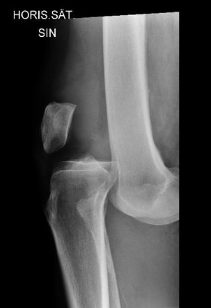
4.65 Whiplash-vamma
Ei kysymyksenasettelua wikissä. Tässä tärkeimmät aiheesta:
- Kaularangan piiskaniskuvammalla tarkoitetaan niskan edestakaista etu-takasuunnan retkahdusliikettä, joka syntyy esimerkiksi peräänajokolarissa. Klassisesti vamma on kuvattu siten, että potilas istuu pysähtyneessä ajoneuvossa, jonka perään yllättäen törmää toinen ajoneuvo. Tällöin potilaan pää retkahtaa aluksi taaksepäin ja tämän jälkeen vielä eteenpäin. Potilas hakeutuu vastaanotolle niskakivun takia.
- Oirekuva vaihtelee paljon varsinkin alkuvaiheessa. Osa potilaista on varsin hätääntyneitä ja heillä voi olla erilaisia raajojen puutumisoireita hyperventilaatioon liittyen. Osa potilaista puolestaan saattaa olla parikin päivää kotona tai töissä ja hakeutuu vastaanotolle vasta viiveellä niskakivun jatkuvasti pahentuessa.
- Diagnostiikka perustuu aina tyypilliseen anamneesiin sekä vakavan vamman poissulkuun, ja tätä kautta jäljelle jää whiplash-diagnoosi. Diagnoosi edellyttää, että potilaalla on piiskaniskuvammaan sopiva vammamekanismi ja paikallinen niskakipu, eikä hänellä ole mitään todettavia neurologisia puutosoireita, jotka voisivat viitata rankavammaan. Potilaalla ei myöskään saa olla tämän hetken käytössä olevin radiologisin menetelmin todettavia traumamuutoksia kaularangassa.
- Whiplash-vammassa on tyypillistä, että paikallinen niskakipu pahenee muutaman ensimmäisen päivän ajan ja alkaa vasta sitten helpottaa. Tämä on syytä kertoa potilaalle jo alkuvaiheessa. Alkuvaiheen riittävä ja asianmukainen kivunhoito, yhdistämällä esimerkiksi NSAID+parasetamoli, on tärkeää.
- Whiplash-vammaan liittyy valitettavan usein kivun pitkittymistä jopa kuukausiksi. Tarkkoja syitä tai mekanismeja tälle ei vielä tiedetä, mutta joitain viitteitä on, että mukana olisi MRI:ssä identifioitavissa olevia muutoksia, mutta toistaiseksi mitään päivystystilanteessa lääkäriä auttavaa pitkittyvän kivun seulontamenetelmää ei vielä ole.
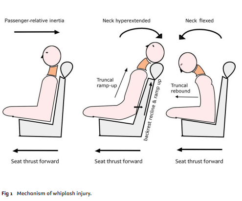
4.66 Vasarasormen hoito
Valitse yksi
- lastoitus 6 vko
- lastoitus 2 vko
- kipsi viereiseen sormeen 4 vko
- leikkaus
Solution.
a
4.67 Missä nikamassa on dens?
Ei vaihtoehtoja wikissä, mutta tulisi osata vastata ilman apuja.
Solution.
C2
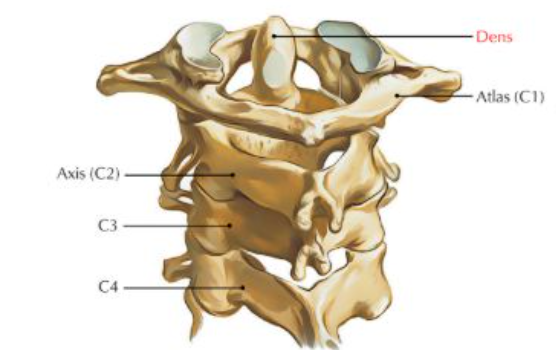
4.68 Lonkkamaljan murtumaan liittyen
Valitse yksi
- reisihermon venytysvaurio yleinen liitännäisvamma
- takaosan murtumassa usein posteriorinen lonkkaluksaatio
- instabiili murtuma leikataan
Solution.
c (myös b sinänsä oikein; wikissä varmaan sanoitus väärä)
a: Yleisimmin lonkkamaljan murtumassa vaurioituva hermo on iskiashermo, joka venyttyy reisiluun taakse luksoituessa ja usein kehittyy peroneuspareesi. Reisihermo kulkee etupuolella, eikä se yleensä vaurioidu lonkkamaljan (acetabulumin) murtumissa
c: Acetabulummurtumien hoito ei poikkea periaatteiltaan minkään muun kantavan nivelpinnan murtuman hoidosta. Instabiilit murtumat siis leikataan.4.69 Sormien loitonnus ei onnistu, vaurioitunut hermo?
Ei vaihtoehtoja, mutta tulisi osata vastata ilman apua.
Solution.
N. ulnaris
Sormien loitonnus ei onnistu = n. ulnaris vaurio
Ranteen ja sormien ekstensio ei onnistu = n. radialis vaurio
Peukalon koskettaminen pikkurilliin (opponens-toiminta) ei onnistu ja sormien/ranteen fleksio heikompaa = n. medianus vaurio4.70 Olkapääluksaation tyypillinen vaurio?
Mikä näistä on yleisin:
- Bankart
- Hill-Sachs
- axillaris
Solution.
a
Kaikki ovat yleisiä olkaluksaatiossa, mutta Bankart on yleisin (jopa 90% luksaatiosta). Hill-Sachs lähteestä riippuen 40-90% ja n. axillaris-vaurio n. 3-40% lähteestä riippuen.
Bankartin leesio tarkoittaa olkanivelen etuosan rustoisen renkaan eli labrumin irtoamista/repeämää tyypillisesti olkanivelen sijoiltaanmenon yhteydessä (repeämä voi olla luinen -> bony bankart)
Hill-Sachsin vaurio tarkoittaa olkanivelen anteriorisen luksaation takia tapahtuvaa posterolateraalisen humeruksen pään painaumamurtumaa (työntyminen glenoideumin anterioriseen reunaan aiheuttaa vamman)
En tiedä oliko wikin kysymyksen tarkoitus vertailla näiden yleisyyttä vai vaan tunnistaa, että nämä ovat yleisimmät liitännäisvammat olkaluksaatiossa, mutta nyt tuli näiden suhteellinen yleisyyskin käytyä läpi.